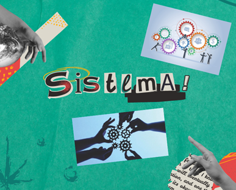
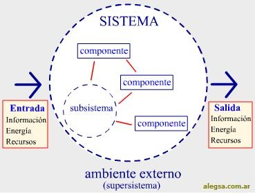
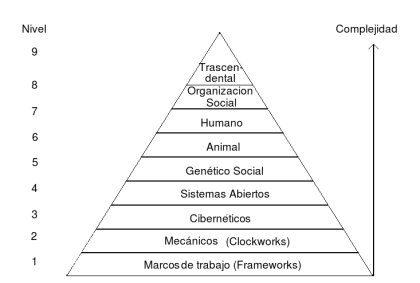
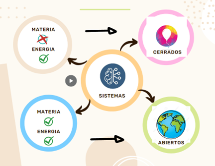
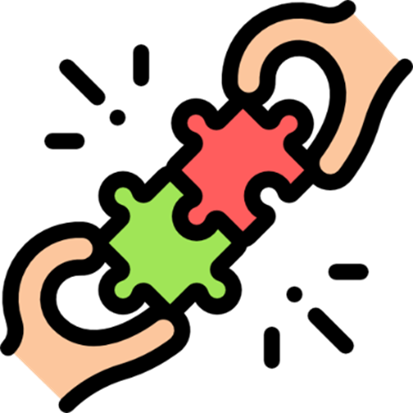
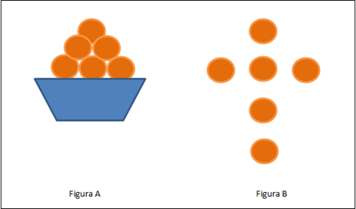

Semana 3
1. La TGS como elemento integrador del conocimiento
la Teoría General de Sistemas (TGS) se presenta como una forma sistemática y científica de aproximación y representación de la realidad y, al mismo tiempo, como una orientación hacia una práctica estimulante para formas de trabajo transdisciplinarias.
En tanto paradigma científico, la TGS se caracteriza por su perspectiva holística e integradora, en donde lo importante son las relaciones y los conjuntos que a partir de ellas emergen. En tanto práctica, la TGS ofrece un ambiente adecuado para la interrelación y comunicación fecunda entre especialistas y especialidades.
Los objetivos originales de la Teoría General de Sistemas son los siguientes:
Impulsar el desarrollo de una terminología general que permita describir las características, funciones y comportamientos sistémicos.
Desarrollar un conjunto de leyes aplicables a todos estos comportamientos.
Promover una formalización (matemática) de estas leyes.
Dato Interesante
La primera formulación en tal sentido es atribuible al biólogo Ludwig von Bertalanffy (1901-1972), quien acuñó la denominación "Teoría General de Sistemas". Para él, la TGS debería constituirse en un mecanismo de integración entre las ciencias naturales y sociales y ser al mismo tiempo un instrumento básico para la formación y preparación de científicos.
Si bien el campo de aplicaciones de la TGS no reconoce limitaciones, al usarla en fenómenos humanos, sociales y culturales se advierte que sus raíces están en el área de los sistemas naturales (organismos) y en el de los sistemas artificiales (máquinas).
2. Conceptualización de Sistema, subsistema, Niveles de Organización, Sistemas abiertos y Sistemas cerrados. Corrientes de entrada. Proceso de conversión. Corriente de Salida.
Un sistema es una serie de elementos que funcionan en conjunto para alcanzar un objetivo, o varios objetivos en común, al aceptar una entrada, procesarla y producir una salida de manera organizada. Este es aquel que aúna por un lado la parte física de la informática y por otra, la parte digital o no tangible de la informática. En otras palabras, un sistema informático debe estar compuesto por hardware y software para que pueda denominarse como tal.

Un subsistema es un sistema que es parte de otro sistema mayor (suprasistema o supersistedma). En otras palabras, un subsistema es un conjunto de elemento interrelacionados que, en sí mismo, es un sistema, pero a la vez es parte de un sistema superior.
Los subsistemas tienen 9 características: propósito, limite, contorno, componentes, interacciones, recursos, ingresos, egresos y subproductos, si no las tienen no se pueden clasificar como y un subsistema otra determinante en la habilidad de funcionar como un sistema.
¿Que es una Jerarquía?
Son los sistemas interceptados por Subsistemas mas Pequeños.
NIVEL 1: Estructuras Estáticas
Formado por las estructuras estáticas,con propiedades estructurales, aunque la estructura pueda ser un poco compleja Boulding nos muestra que no hay gran variedad de elementos ni propiedades emergentes del sistema.
NIVEL 2: Sistemas Dinámicos Simples
Complejidad son los sistemas dinámicos simples. De movimientos predeterminados. Denominado también el nivel del movimiento del reloj.
NIVEL 3: Sistemas cibernéticos o de control
Complejidad son los mecanismos de control o los sistemas cibernéticos. Sistemas equilibrantes que se basan en la transmisión e interpretación de información.
(ejemplo el termostato).
NIVEL 4: Sistemas Abiertos
Complejidad el de los sistemas abiertos. Sistema donde se empieza a diferenciar de las materias inertes donde se hace evidente la automantención de la estructura
(ejemplo la célula).
NIVEL 5: Genético Social
Complejidad denominado genético – social. Nivel tipificado por las plantas donde se hace presente la diferenciación entre el genotipo y el fenotipo asociados a un fenómeno de equifinalidad, ejemplo el girasol.
NIVEL 6: Animal
Complejidad de la planta al reino animal. Aquí se hace presenta receptores de información especializados y mayor movilidad.
NIVEL 7: El hombre
Complejidad es el nivel humano. Es decir el individuo humano considerado como sistema.
NIVEL 8: Las estructuras sociales
Organización constituido por las organizaciones sociales. Llamado también sistema social, a organización y relaciones del hombre constituyen la base de este nivel.
NIVEL 9: Sistemas trascendentes
Complejidad el de los sistemas trascendentales. Donde se encuentra la esencia, lo final, lo absoluto y lo inescapable.
la división de los sistemas abiertos y cerrados, no todos concuerdan en la definición de ellos. Por ejemplo, Forrester, define como “sistema cerrado” a aquél cuya corriente de salida, es decir, su producto, modifica su corriente de entrada, es decir, sus insumos. Un sistema abierto es aquél cuya corriente de salida no modifica a la corriente de entrada. Un ejemplo del primer caso lo tenemos en el sistema de calefacción en que la corriente de salida, calor, modifica la información que recibe el regulador del sistema, el termostato.
Von Bertalanffy (que fue el creador de la Teoría del Sistema Abierto señala que un sistema cerrado es aquel que no intercambia energía con su medio (ya sea de importación o exportación) y el sistema abierto es el que transa con su medio.
Finalmente V. L. Parsegian, define un sistema abierto como aquel en que:
Existe un intercambio de energía y de información entre el subsistema (sistema) y su medio o entorno.
El intercambio es de tal naturaleza que logra mantener alguna forma de equilibrio continuo (o estado permanente) y Las relaciones con el entorno son tales que admiten cambios y adaptaciones.
Los dispositivos de entrada y salida o unidades de entrada/salida son los equipos físicos conectados a la computadora. Estos dispositivos permiten comunicar información entre el usuario y la computadora o manejar un soporte de información.

Sinergia
Sinergia Positiva
Sinergia Negativa
Sinergia Neutra
Recursividad
1. Conceptualización de Sistema
2. subsistema
3. niveles de organización
4. los sistemas abiertos y cerrados
“Todos los sistemas vivientes son sistemas abiertos. Los sistemas no vivientes son sistemas cerrados”. 
5. Los dispositivos de entrada y salida
Semana 4
1. Sinergia y Recursividad.
Es la integración de varios elementos que tienen diferentes cualidades y estos conforman el sistema o conllevan a un fin. por otro lado, en la sinergia intervienen todos aquellos objetos que necesitan de otros para funcionar.
Tipos De Sinergia.
La sinergia positiva surge cuando los elementos que componen el sistema están bien integrados entre si
La sinergia negativa surge cuando en un sistema se tiende a la desintegracion
Cuando la interacción no produce efectos multiplicadores de ningún tipo, ni positivos ni negativos
Ejemplos de sinergia
Video Apoyo
El hecho de que un sistema, este compuesto a su vez de objetos que también son sistemas. Lo importante de esto es que cada uno de los objetos, no importando su tamaño, tiene propiedades que lo convierten en una totalidad.
La recursividad es una técnica muy empleada en la programación informática y consiste en que una función se llame a sí misma.
El ejemplo clásico es la función que calcula la factorial de un número.
Video Apoyo